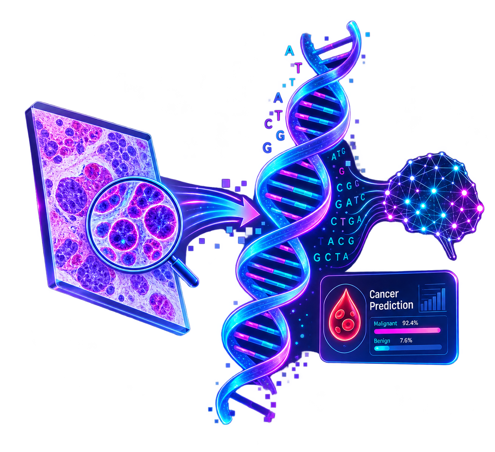
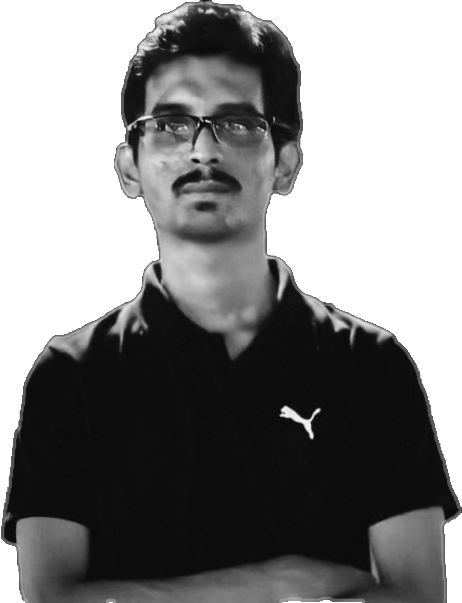
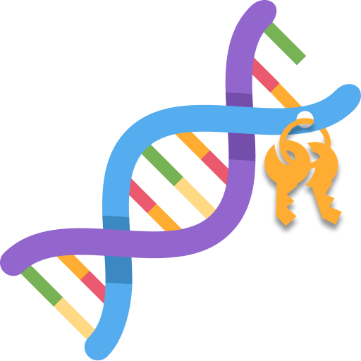

Prediction of Blood Cancer using DNA Sequences Derived from Histology Images
Invented a new set of techniques to implement Image to DNA Convert and Cancer Prediction.
Case study ↗
I’m Sourav Chanda, a developer who turns ambitious ideas into fast, beautiful and useful products.
Curious by nature, detail-oriented by choice, and always looking for the next interesting problem to solve.

A few projects that show how I approach product, design and engineering.

Invented a new set of techniques to implement Image to DNA Convert and Cancer Prediction.

Invented a new set of techniques to implement DNA Cryptography for secure data communication.
A chrome extension that automatically puts the star ratings of an E-commerce product by analyzing the product review written by the customer.
From foundational studies to postgraduate research, each step has shaped how I learn, build and investigate new ideas.
Postgraduate studies with a focus aligned with computing, development and research interests.
Undergraduate engineering studies building a strong foundation in computer science and technology.
Technical education and practical foundation before continuing into engineering studies.
Higher Secondary education with a focus on building a strong academic foundation for higher studies
Secondary education providing a strong foundation in core academic subjects and preparing for further education.
Exploring the intersection of software, intelligent systems and security.
Have a project, collaboration, research idea or opportunity? I’m open to conversations and new challenges.
✉ souravchanda601@gmail.comIf you enjoy my work or find a project useful, you can support me with a coffee.